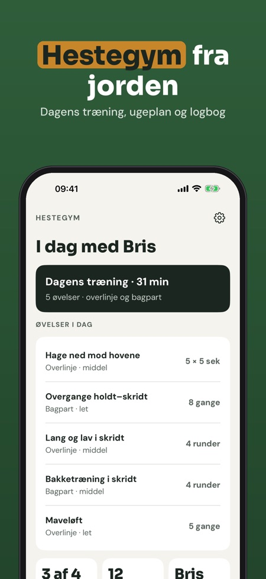
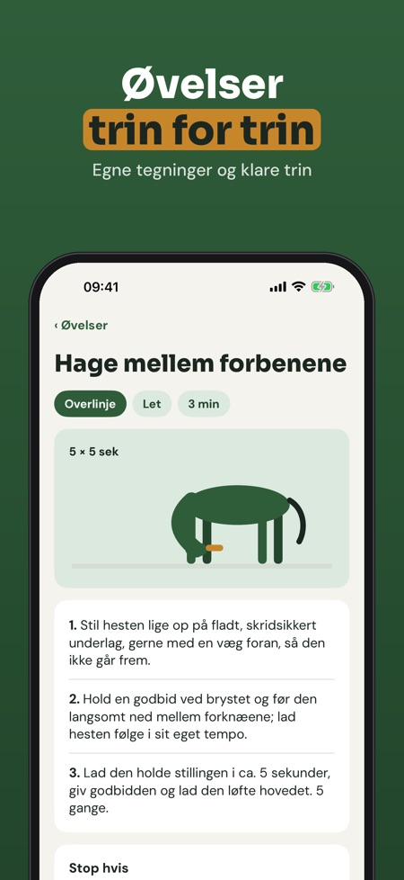
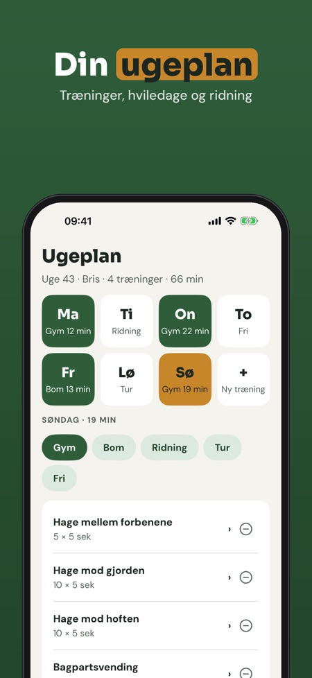

Udstrækning, styrke og ugeplan. Øvelser fra jorden til din hest: udstrækning, styrke og balance i korte træninger med timer, ugeplan og logbog – også uden net i stalden.



Hestegym er træningsprogrammet til dig, der arbejder med hesten fra jorden: øvelsesbibliotek, ugeplan, timer og logbog samlet ét sted.
Dagens træning med timer, 12 øvelser og logbogen kan bruges uden køb. Den fulde version er et engangskøb, der låser hele biblioteket, ugeplaner, påmindelser, fremskridt og flere heste op. Intet abonnement.
Hestegym giver ikke dyrlægeråd og erstatter ikke dyrlæge eller fysioterapeut. Er hesten skadet, halt eller i behandling: spørg dyrlægen, før du starter.